1. LLMエディタ¶
1.1. はじめに¶
本書は、ITAのLLMエディタの機能および操作方法について説明します。
LLMエディタを使用するにあたっては、LLMモデルの認証情報が必要となりますが、
本説明においては、Amazon Bedrock（Claude Code）を利用した場合の例として記載しています。
1.1.1. LLMエディタ詳細¶
機能について¶
LLMエディタはLLMモデルと会話を通じて開発支援を行います。
1.2. 開発支援設定¶
本章では、開発支援設定の操作について説明します。
1.2.1. 開発支援設定登録¶
- エディタより、 ボタンをクリックします。
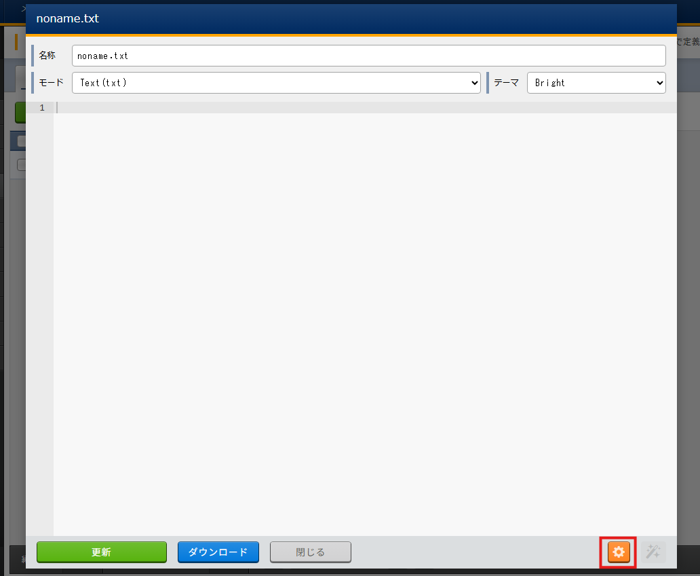
- AI選択からAmazon Bedrock（Claude Code）を選択します。
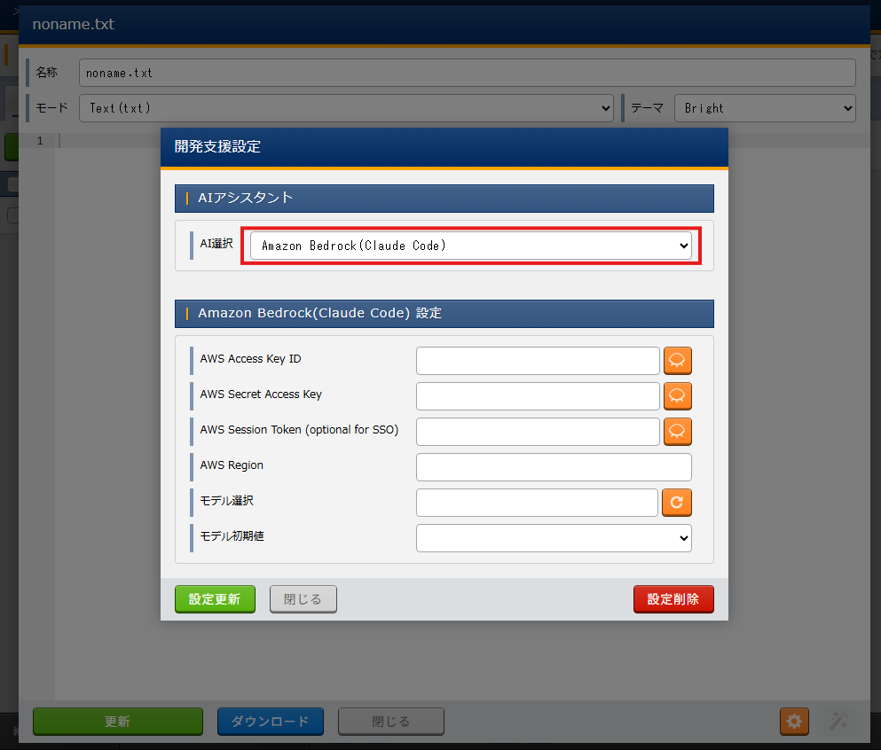
- AWS Access Key ID・AWS Secret Access Key・AWS Session Token (optional for SSO)・AWS Regionを入力して、 ボタンをクリックします。
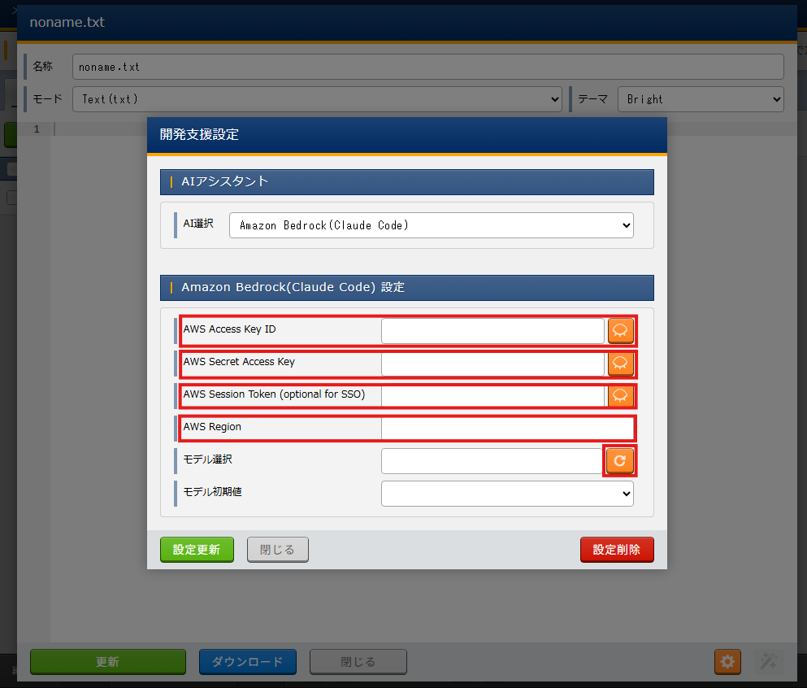
- モデル選択・モデル初期値を選択して、 設定更新 ボタンをクリックします。
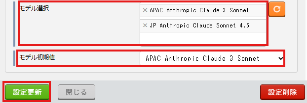
{kind=link}
{kind=link}
{kind=link}
{kind=link}
1.2.2. 開発支援設定削除¶
開発支援設定を開き、設定削除 ボタンをクリックします。
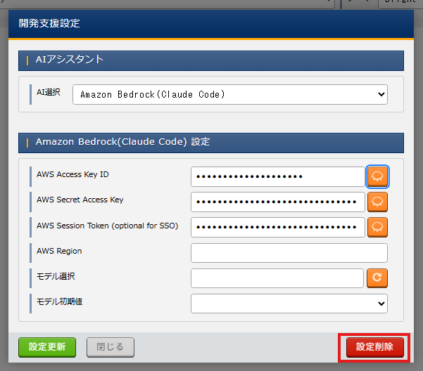
削除確認で本当に削除する場合は、OK ボタンをクリックします。
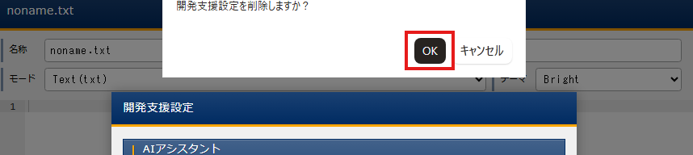
{kind=link}
{kind=link}
警告
削除された設定は、復活することはできませんので、削除する際は十分にお気を付けください。
1.3. 開発支援¶
本章では、開発支援の操作について説明します。
1.3.1. メッセージ送信¶
- エディタより、 ボタンをクリックします。
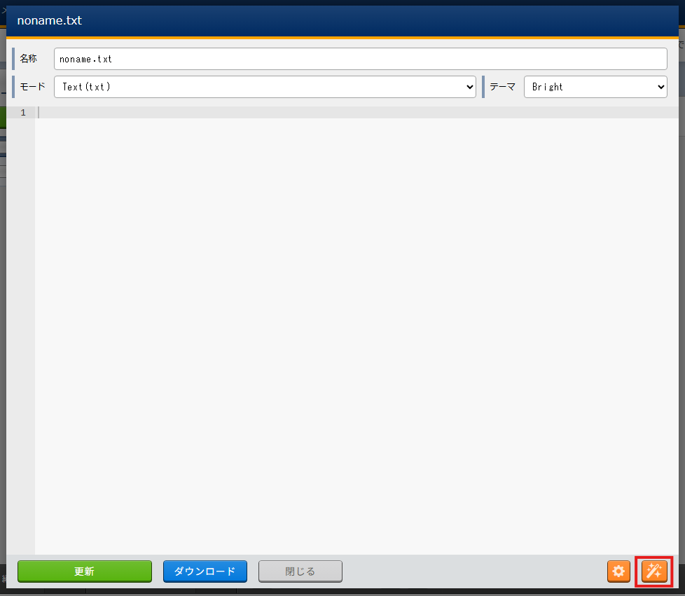
- メッセージを入力しEnterまたは、 ボタンでメッセージを送信します。
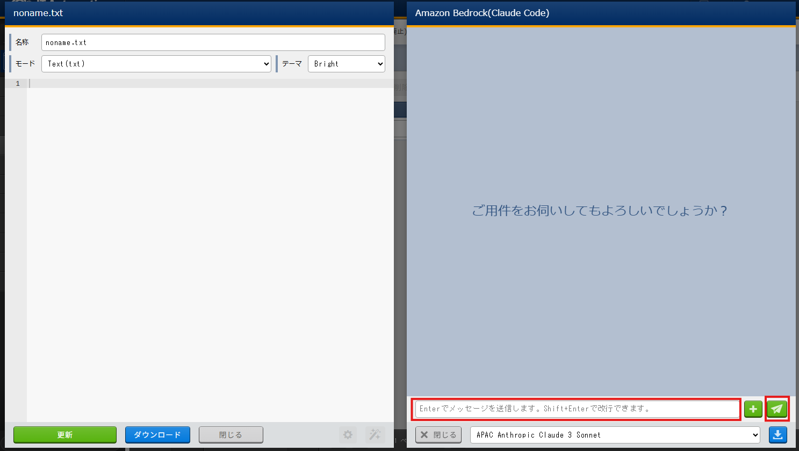
- エディタの内容を添付したい場合は、 ボタンをクリックします。
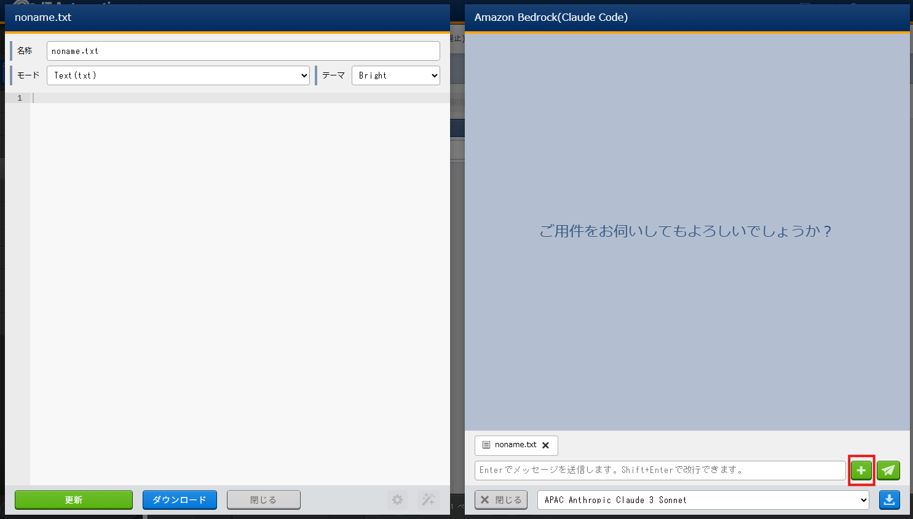
{kind=link}
{kind=link}
{kind=link}
1.3.2. コードの反映¶
コードブロックの内容をエディタに反映したい場合はコードブロックをクリックします。
{kind=link}
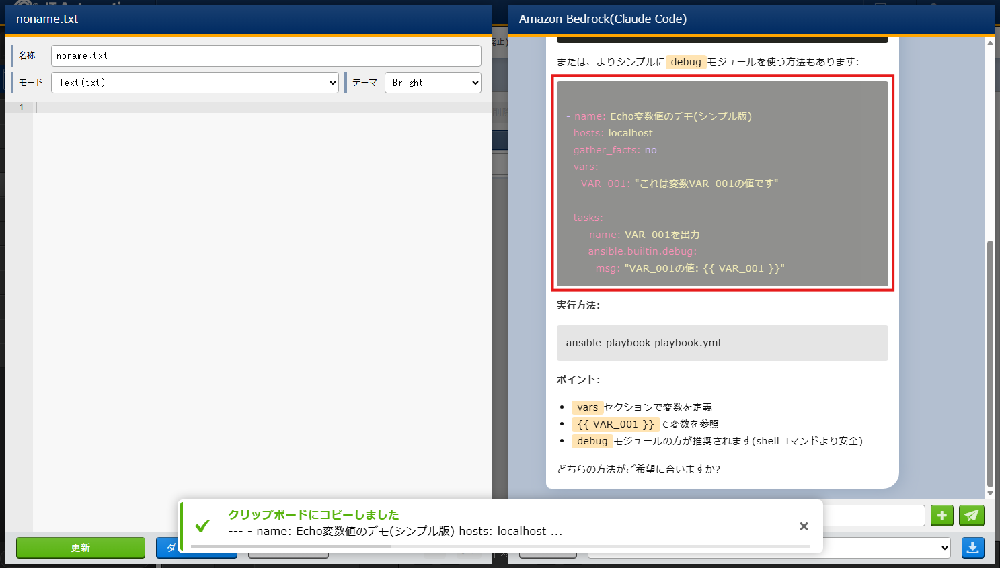
警告
Exastro IT Automation エンドポイントのプロトコルがhttpの場合は利用できません。
1.3.3. 会話履歴ダウンロード¶
会話内容をダウンロードしたい場合は、 ボタンをクリックします。
{kind=link}
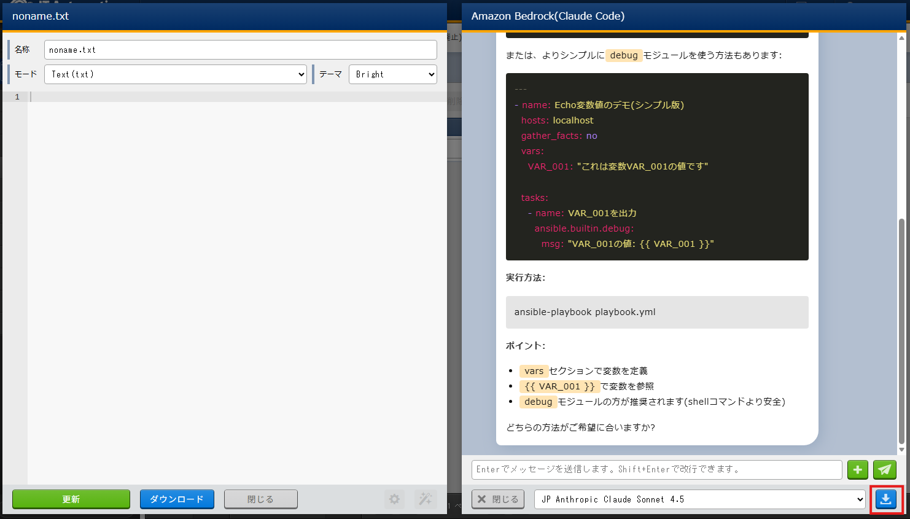
Tip
すべての会話内容がjson形式ファイルで保存されます。